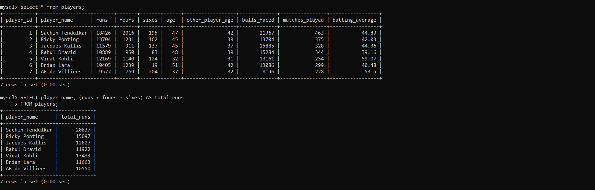

The NOT IN SQL query or the NOT IN operator is used to filter the result if the values that are mentioned in the IN operator are not satisfied. The NOT IN operator is the exact opposite of the IN operator in SQL. The usage of the NOT IN SQL query is to replace the group of arguments which are using the <> or !=
.